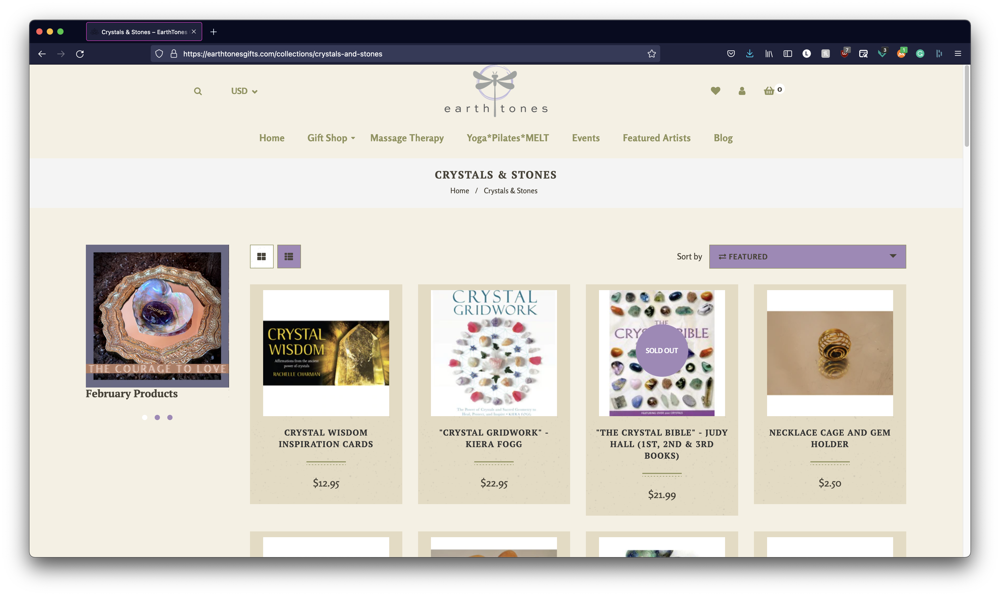
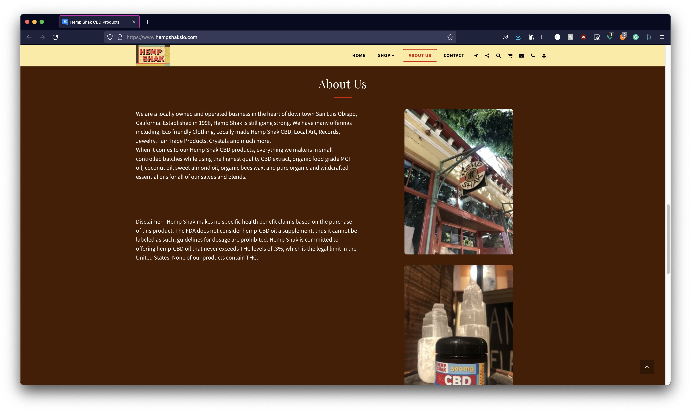
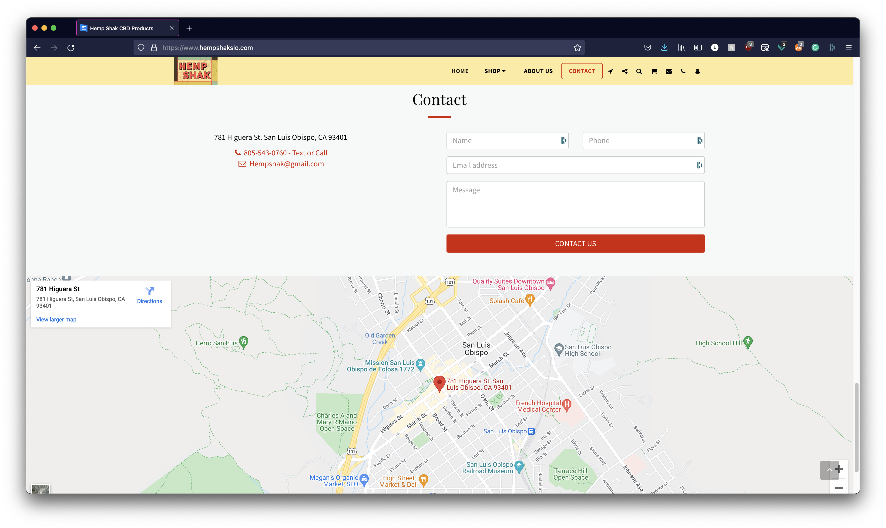
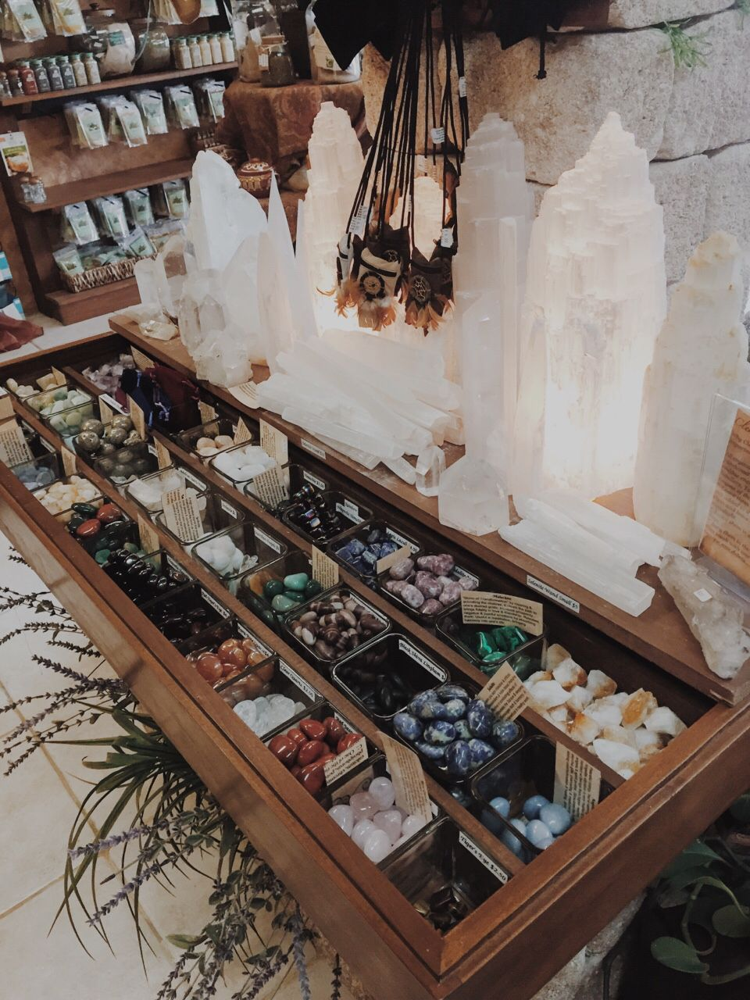

Final project proposal
Introduction
Crystal SLO
Crystal SLO is a locally owned crystal shop located in downtown San Luis Obispo. All crystal are sustainably and ethically sourced from sellers around the globe. Our crystals aid in the healing of the soul.
Target audience
The target audeince for Crystal SLO are people who are interested in natual healing. They are spiritual individuals who are interesed in the healing aspects that come from crystals. The audeince can also be those who are interesed in lapidary, the hobby of collecting precious or rare stones.
The goal of Crystal SLO is to provide the SLO community access to precious stones and crystals that are ethically and sustainably source that they would otherwise have to purchase online. Crystal SLO also aims to help those interested in the healing aspect of crystals, get the information and resources they need to help them in their healing journey.
Comparative analysis
EarthTones

Hemp Shak
 Gaia's Garden


Website content
Home
Welcome to Crystal SLO
Shop
Crystals

-
Amethyst
Used for aiding in sleep and relaxation. De-stress and purify your aura while inviting in divine wisdom.
$7.00
-
Selenite
Used for purifying, soothing and cleansing. Easy to use and connect with. Does not need to be cleansed or recharged.
$7.00
-
Clear Quartz
Used to reduce negative energy and improve both mood and mental clarity. Unblock your energy flows with this high vibration crystal.
$7.00
-
Rose Quartz
Best for love, compassion and comfort.
$7.00
-
Green Adventurine
Used for deep healing. Great for releasing energy blocks and boosts your chances of winning in all enterprises.
$7.00
-
Black Tourmaline
Talisman of powerful protection. Used to cleanse and purify by rebounding negative energy and reducing anxiety.
$7.00
-
Smoky Quartz
Used to create harmony, balance and top madness by connecting to the spiritual world.
$7.00
-
Pyrite
Used to bring in wealth, good fortune and abundance. Often used as a good luck charm.
$7.00
-
Black Obsidian
Used to get rid of negative energy and confusion.
$7.00
-
Blue Lace Chalcedony
Represents the "Evil Eye". Used for enhancing communication skills, boosting confidence and self expression. Helps to release stress anf anxiety in the head, neck and shoulder areas.
$7.00
Stones
-
Amazonite
Used for courage. Assists with healing emotional and health issues.
$3.00
-
Agate
Used to soothe inner conflict, enhance concentrartion and help with ailments of the eyes and stomache.
$3.00
-
Seraphinite
Known as the crystal of spiritual enlightment. Used as an aid to the journey of self-discovery and spiritual enlightenment.
$3.00
-
Jasper
Used to soothe anxiety by getting rid of negative energies that cause distress.
$3.00
-
Sunstone
Used for goodluck and good fortune. Cleanses thoughts and troubling matters of the heart. Increases self-confidence, self-worth, and general optimism.
$3.00
-
Moonstone
Used for protection during traveling, communication and stomache calming. Inceases joy and karmic healing.
$3.00
-
Labradorite
Used for energy protection, spiritual alignment and rational and intuitive wisdom.
$3.00
-
Turquoise
Used for an increase of freedom, letting go, strength and a reduction in stress and pain. Good for safe travels.
$3.00
-
Tiger's Eye
Good for abundance, knowledge, vision, courage, inegrity and power.
$3.00
-
Bloodstone
Used for patience, protection, sleep aid, immune and lymphatic stimulation, aural cleansing and base and heart chakra.
$3.00
About Us
We are a locally owned crystal shop in the heart of downtown San Luis Obispo, California. It all started with a spiritual journey. When the owner of Crystal SLO experienced the natural healing of crystal, she knew she had to share it with the world, starting in her own backyard.
In 2015, owner Eve Jennings opened her shop in downtown San Luis Obispo, selling crystals and stones she source sustainably and ehtically from around the world. Since then the shop has grown its inventory to include stones, jewlrey and books that offer information on how to use cyrstals and stones for natural healing.
We love the community we serve and are constantly looking for ways to give back. Since the opening of our shop we have donated over $10,000 to local non profits that help with medical costs of SLO county residents. We do this by donating 10% of all sales to local orgaizations.
If you are looking start your natual healing journey, look no farther than Crystal SLO. We hope to see you soon!
Contact
Hours
-
Monday - Friday
7:00am - 5:00pm
-
Saturday - Sunday
8:00am - 3:00pm
Contact Us
-
Phone
(805)990-5515
-
Email
crystalslo@gmail.com
Location
-
San Luis Obispo
131 Branch Street
San Luis Obispo, CA 93405